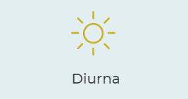
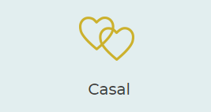
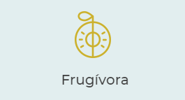
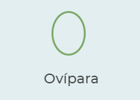
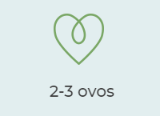
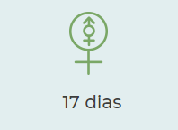
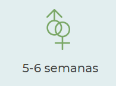

Pteroglossus viridis
Descricao do Animal
Este é um pequeno tucano, com plumagem sobretudo verde escura e amarela com uma distinta mancha vermelha.
O bico é colorido com amarelo, vermelho e preto. Há dimorfismo sexual: o macho tem as penas do pescoço e da
cabeça de cor escura enquanto que as da fêmea são de cor castanha-avermelhada.
Hábitos
Esta espécie sedentária vive em pequenos bandos, ou grupos familiares. Alimenta-se sobretudo de frutos mas,
ocasionalmente, pode complementar a sua dieta com pequenos insetos. Estes animais são importantes dispersores
de sementes dos frutos de que se alimentam.
Reprodução
Atinge a maturidade sexual com 1 ano. A época de reprodução em habitat natural é de fevereiro a junho. O ninho
é feito em ocos de árvores e tanto o macho como a fêmea do casal cuidam das crias nos primeiros tempos de vida,
até perto dos 6 meses de idade.
Conservação
A população global desta espécie na natureza parece estar estável. No entanto, a perda do habitat, sobretudo devido
à desflorestação, pode vir a ameaçar a sua sobrevivência. Está incluída no apêndice II da CITES.
Habitat
Floresta subtropical e tropical, florestas marginais a savanas e plantações arbóreas.

Atividade

Vida Social

Dieta

Reprodução

Ovos

Incubação

Tempo no ninho
